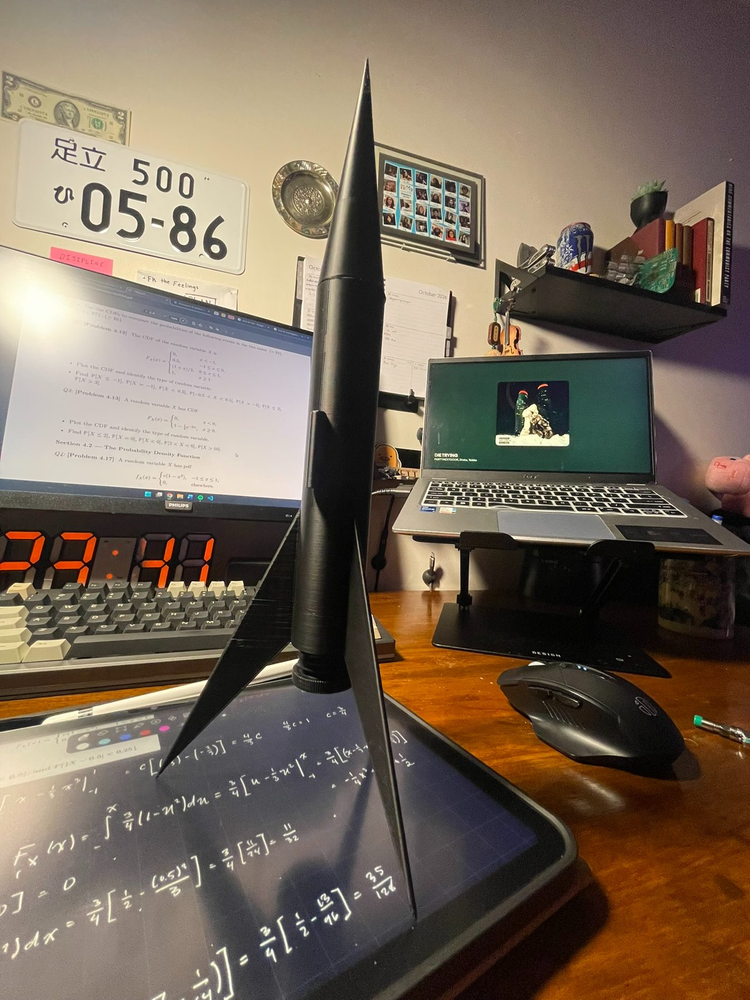
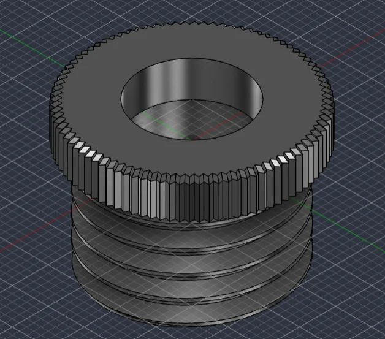
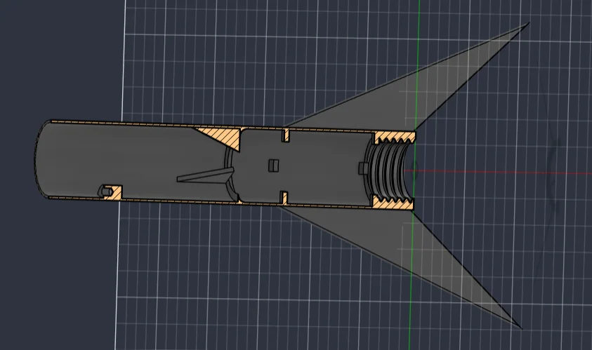

AEROSPACE / CAD
ROCKET DESIGN & TESTING
CAD modeling, stability studies, prototyping and launch with Purdue Space Program.





AEROSPACE / CAD
CAD modeling, stability studies, prototyping and launch with Purdue Space Program.


